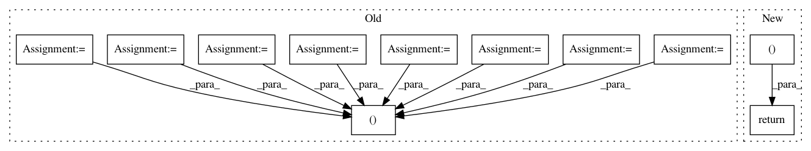

44a67ccafb42ff7e2fef248aa8cc040c05846e5f,pyAudioAnalysis/audioTrainTest.py,,model_precision_recall_curve,#Any#Any#Any#,918
Before Change
return -1, -1, -1
if model_type == "knn":
classifier, mean, std, classes, mid_window, mid_step, short_window, \
short_step, compute_beat = load_model_knn(model_name)
else:
classifier, mean, std, classes, mid_window, mid_step, short_window, \
After Change
for i in range(len(fpr)):
print(fpr[i], tpr[i])
return thr_prre, pre, rec, thr_roc, fpr, tpr
def file_classification(input_file, model_name, model_type):
// Load classifier:
In pattern: SUPERPATTERN
Frequency: 3
Non-data size: 11
Instances
Project Name: tyiannak/pyAudioAnalysis
Commit Name: 44a67ccafb42ff7e2fef248aa8cc040c05846e5f
Time: 2020-04-23
Author: tyiannak@gmail.com
File Name: pyAudioAnalysis/audioTrainTest.py
Class Name:
Method Name: model_precision_recall_curve
Project Name: SPFlow/SPFlow
Commit Name: 9abdb78fb6f02710414a565ed87327c77e7d9c90
Time: 2018-12-11
Author: molina@cs.tu-darmstadt.de
File Name: src/spn/structure/leaves/parametric/utils.py
Class Name:
Method Name: get_scipy_obj_params
Project Name: uuazed/numerapi
Commit Name: da794766e8076ffae4f7265def25042ed01bd796
Time: 2017-06-18
Author: dhj@dhj.io
File Name: numerapi/numerapi.py
Class Name: NumerAPI
Method Name: get_user